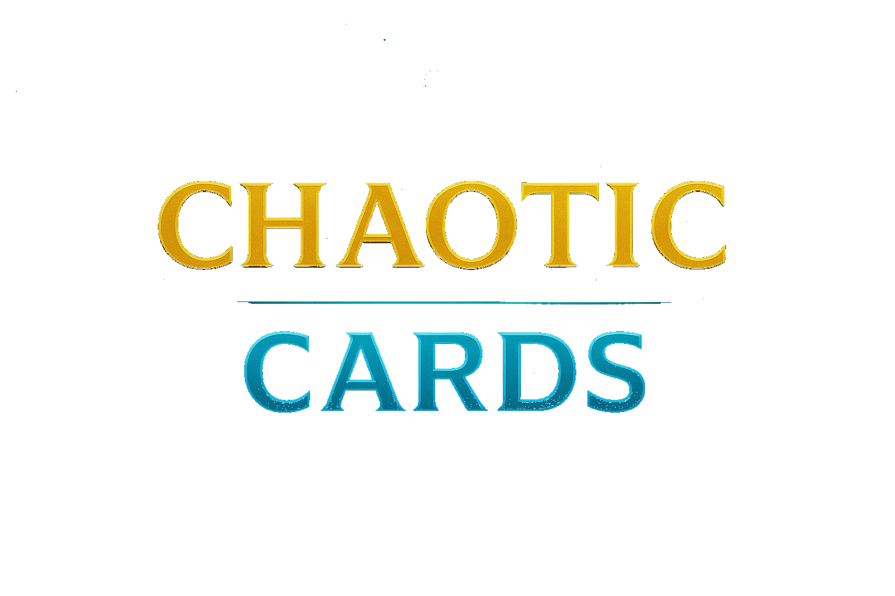
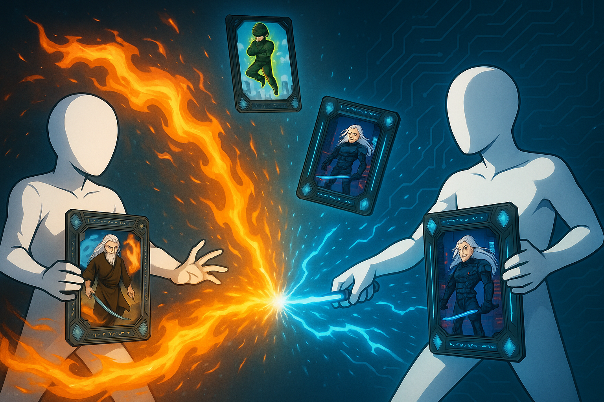
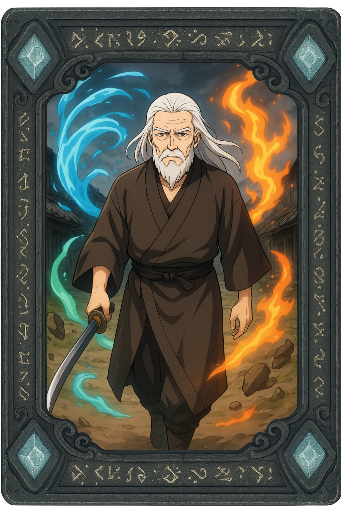
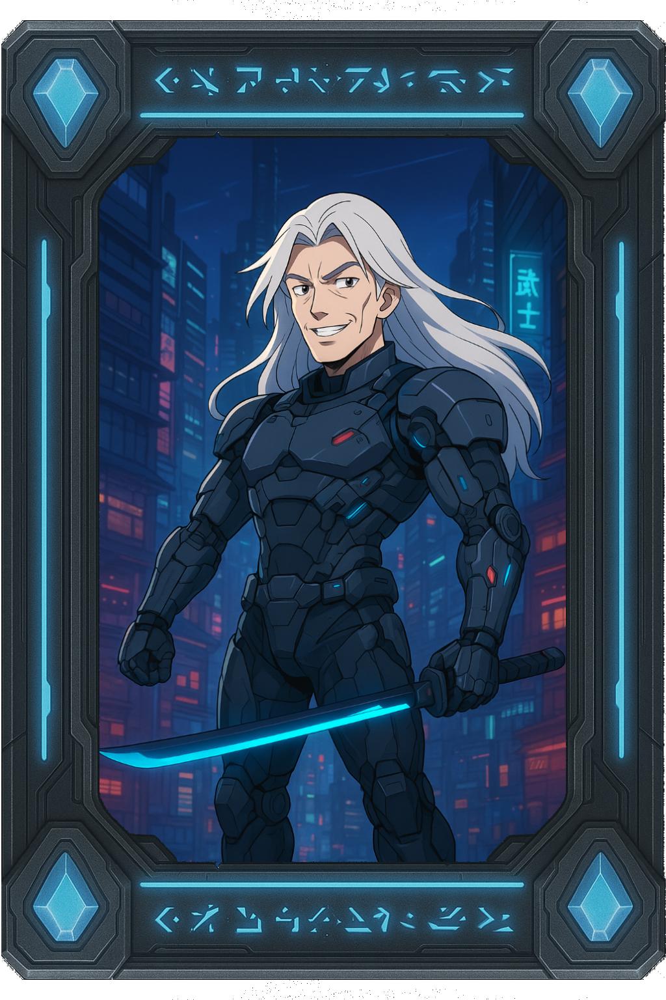
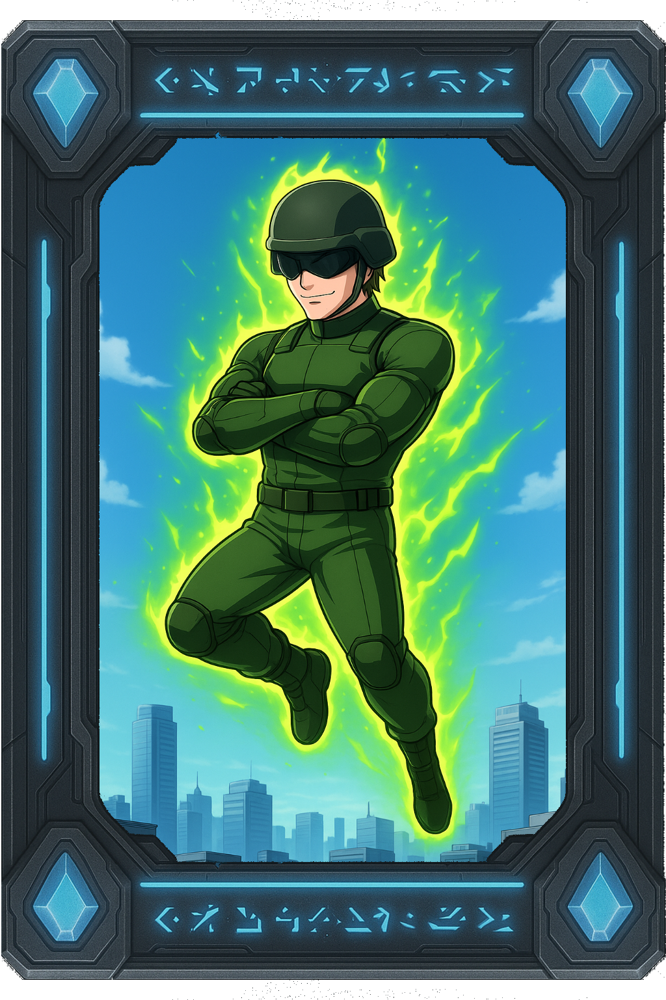
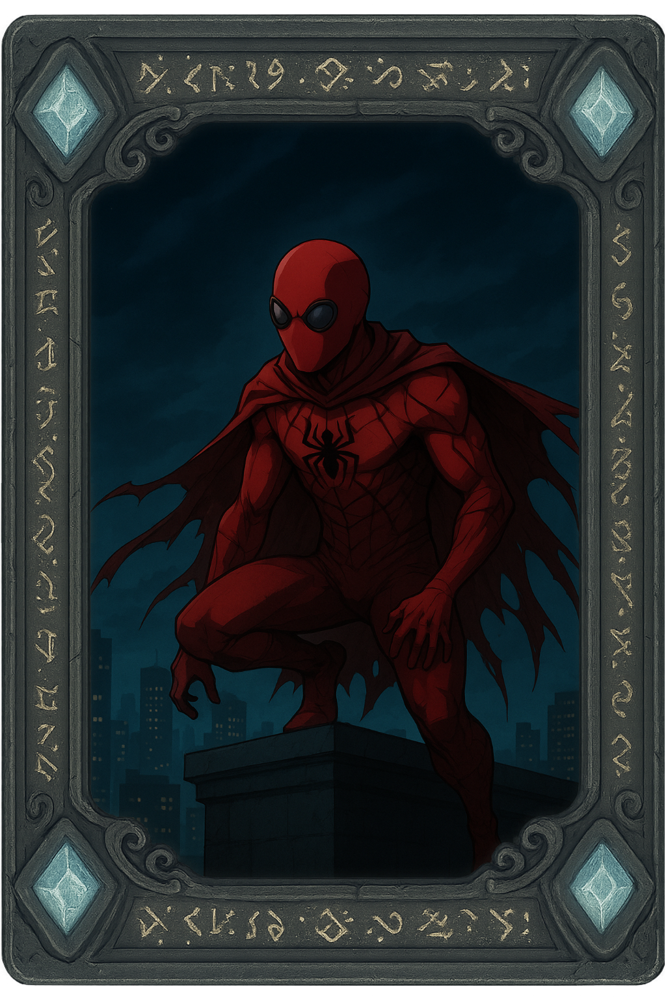

Chaotic Cards es un juego de cartas por turno, ambientado en un mundo de fantasia y ciencia ficcion, dicho de otro modo,
un mundo donde la magia y tecnologia son cosas del dia a dia, con una variedad de personajes que estan plasmados en cartas que
describen y mencionan su historia, estadisticas y habilidades, arma tu mazo con los personajes que mas sean de tu agrado y
aventurate a los duelos de cartas poniendo a prueba tu determinacion en duelos de cartas donde la habilidad definira al ganador.
Para mas informacion del juego, mecanicas, historia, cartas y mas. Visita nuestro Trello oficial
Por el momento, solo contamos con un simple prototipo del juego de CHAOTIC CARDS, a futuro se espera que sea un juego online donde los duelos se puedan dar entre 2 jugadores, jugador 1 contra jugador 2, por el momento, en el prototipo solo puedes enfrentar a un bot, una vez iniciado el duelo, utiliza las cartas que tienes en el mazo, para ganar el duelo deberas usar las cartas con las que cuentas en el mazo, puedes realizar ataques basicos o habilidades especiales que varian segun la carta con la que elijas actuar.

Un samurai de ya una gran edad, que se mantiene firme sobre la vieja tradición del uso de las capacidades físicas y mágicas de uno mismo, aborreciendo la idea de los nuevos samuráis mejorados tecnológicamente, que pese a que la vejez lo limita bastante físicamente, gracias a la magia y su gran control sobre los elementos principales tierra, agua, fuego y aire, es capaz de desenvainar su katana una vez más, fervientemente… y simplemente descansará el dia que pueda vengarse de su hermano.

La sombra de su hermano, un samurai mediocre que nunca pudo desarrollar o demostrar tal afinidad descomunal como la de su rival, frustrado, agotado, sabiendo que por el sendero de un samurai mágico tradicional nunca lograría superar o igualar, recurre a las mejoras cibernéticas, consiguiendo resultados excepcionales, la edad ya no limita su desempeño al combate gracias a su nuevo cyber cuerpo.

Un soldado sometido a experimentos para lograr lo imposible, que el cuerpo humano sea capaz de soportar y aprovechar la energía gamma, realizado no solo a uno si no a miles, el único caso exitoso y a su vez desafortunado fue el, su cuerpo genera constantemente energía gamma, mediante la fisión nuclear este es capaz de provocar explosiones destructivas que varían su capacidad destructividad según la energia que acumule o use, pese a su gran poder destructivo, sus capacidades físicas son las de un simple humano, pese a ello, se cree la forma de vida absoluta, al contar con el poder de la destrucción nuclear en la palma de su mano.

Un ladrón que luego de robar un Tótem araña maldito, fue maldecido por un dios araña, condenandolo a compensar cada uno de sus pecados mediante buenas acciones, sin importar el método, con habilidades sobrehumanas como trepar, adherirse a superficies y adherir, ser capaz de generar su propia telaraña de manera orgánica, reflejos sobrehumanos y demas capacidades sobrehumanas, este obligadamente opera como vigilante hasta lograr compensar todo el mal que a hecho.